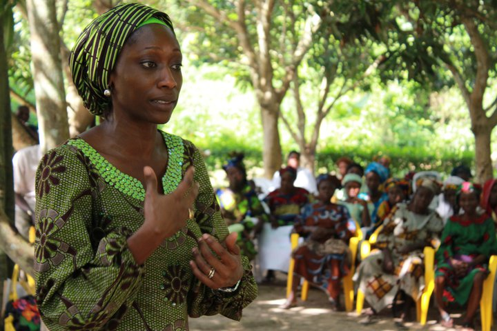

(+234)9043298729
Our Blog
Latest news & articles directly from our blog
Poverty eradication refers to the long-term process of reducing or eliminating poverty in a society. Poverty is a complex issue that can be caused by various factors, including economic, social, and political inequalities. Poverty eradication requires a holistic approach that addresses all these factors.
United Nations has set the goal of eradicating extreme poverty and reducing poverty levels globally through the Sustainable Development Goals (SDGs). The SDGs aim to eliminate poverty in all its forms and dimensions, including ensuring access to basic necessities such as food, shelter, healthcare, education, and social protection systems.
There are several approaches that can be used to eradicate poverty, including:
Economic growth: Improving the economy of a country through policies and programs that promote growth and job creation can help reduce poverty levels.
Social protection: Providing social protection programs such as cash transfers, food subsidies, and health insurance can help reduce poverty levels by providing a safety net for vulnerable populations.
Education: Improving access to education and increasing literacy rates can help break the cycle of poverty by providing individuals with the skills and knowledge they need to improve their lives.
Empowerment: Empowering marginalized communities and individuals through access to resources, decision-making power, and participation in governance can help reduce poverty levels.
Gender Equality: Promoting gender equality and empowering women can help reduce poverty levels by improving access to education, healthcare, and economic opportunities.
Ultimately, poverty eradication requires a sustained effort by governments, civil society, and the private sector. It is a complex and long-term process that requires cooperation, coordination, and commitment from all stakeholders.

Increase Access to Education
Education is a key factor in reducing poverty. Providing access to education for all, regardless of social status, gender or race, can lead to better job opportunities and a higher income.

Improve Health Care
Healthcare is crucial for people living in poverty. Access to basic healthcare can help prevent diseases and illnesses, which can lead to more productive lives.

Promote Economic Growth
Economic growth is another essential factor in reducing poverty. Governments and organizations can invest in infrastructure, create jobs, and support small businesses to stimulate economic growth.

Provide Social Saftey Nets
Social safety nets, such as cash transfers, food subsidies, and job training programs, can help people living in poverty meet their basic needs. These programs provide a temporary lifeline for people in crisis and help them move out of poverty in the long term.

Empower Women
Gender inequality is a significant contributor to poverty. Empowering women through education, job opportunities, and leadership positions can help break the cycle of poverty. Women are more likely to invest in their families and communities, which can lead to economic growth and social development.

Access to Financial Services
One of the most effective ways to eradicate poverty is to provide access to financial services, such as microfinance and savings programs. This can help individuals and families build assets, start businesses, and create a sustainable source of income.